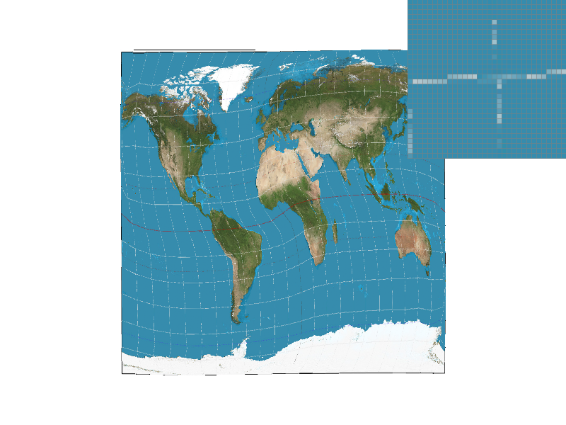
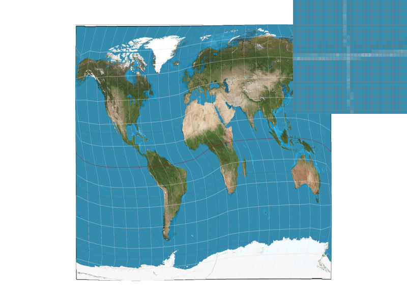

Pixel Sampling
-
Pixel sampling is to use barycentric coordinates of the pixel in the triangle, to sample the color of the pixel in the texture.
-
Nearest sampling is just simply find the nearest pixel in the texture.
Bilinear sampling is to find the four nearest pixels in the texture, and interpolate the color of these four pixels.
Comparison of Four Versions of the Image
|
Nearest and 1 sample per pixel
|
Nearest and 16 samples per pixel
|
|

Linear and 1 sample per pixel
|

Linear and 16 samples per pixel
|
Bilinear is much better than nearest when the sample rate is low. But when the sample rate is high, the difference between the two methods is not that significant.
This is because bilinear take the average of the four nearest pixels, so it's more close to the real color of the pixel. But when the sample rate is high, the color of the pixel is already close to the real color, so the difference between the two methods is not that significant.